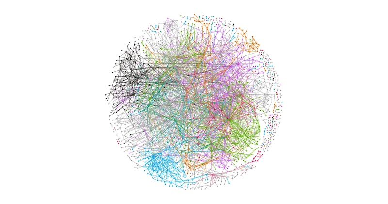

[netflex microservice] https://netflixtechblog.com/tagged/microservices
마이크로서비스는 소프트웨어가 잘 정의된 API를 통해 통신하는 소규모의 독립적인 서비스로 구성되어 있는 경우의 소프트웨어 개발을 위한 아키텍처 및 조직적 접근 방식입니다.
이러한 서비스는 독립적인 소규모 팀에서 보유합니다.
마이크로서비스 아키텍처는 애플리케이션의 확장을 용이하게 하고 개발 속도를 앞당겨 혁신을 실현하고 새로운 기능의 출시 시간을 단축할 수 있게 해 줍니다.

마이크로서비스 아키텍처의 경우, 애플리케이션이 독립적인 구성 요소로 구축되어 각 애플리케이션 프로세스가 서비스로 실행됩니다. 이러한 서비스는 경량 API를 사용하여 잘 정의된 인터페이스를 통해 통신합니다. 서비스는 비즈니스 기능을 위해 구축되며 서비스마다 한 가지 기능을 수행합니다. 서비스가 독립적으로 실행되기 때문에 애플리케이션의 특정 기능에 대한 수요를 충족하도록 각각의 서비스를 업데이트, 배포 및 확장할 수 있습니다.
[출처] https://aws.amazon.com/ko/microservices/